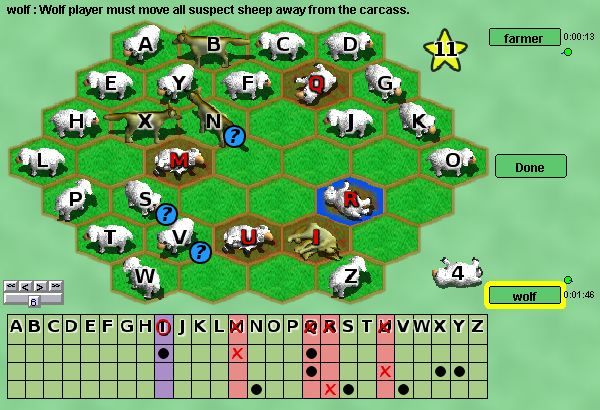

Mutton
Mutton est un jeu de déduction pour deux joueurs. Un joueur prend le rôle des loups qui se déguisent en moutons pour manger autant de moutons que possible. L'autre joueur est le fermier qui essaie de tuer les loups avant qu'ils n'aient mangé trop de moutons.
Les règles complètes sont disponibles ici .
Cette version ne propose que des parties d'une seule manche. Le premier joueur prépare le plateau et décide combien de moutons les loups doivent tuer pour gagner. L'autre joueur choisit alors de prendre les loups ou le fermier. Le joueur du côté du fermier gagne s'il peut abattre les 4 loups avant que le nombre de moutons nécessaire ait été tué (soit mangés par les loups, soit abattus par le chasseur). Le joueur déplaçant les loups gagne si le nombre de moutons nécessaire est tué avant les 4 loups.
Si vous préférez désactiver la feuille de score et tenir les comptes vous-même, des fiches de score imprimables sont disponibles sur le site de Cameron Browne.
Robots : Dumbot choisit ses coups aléatoirement parmi ceux qui sont valides et est assez facile à battre.
|

|
Création :
Mutton a été créé par Cameron Browne et Stephen Tavener. |
Programmation :
La version de Mutton disponible sur Boardspace a principalement été créée par Richard Walter (nom d'utilisateur : rwalter42). C'est sa première contribution à ce site et j'espère que ce ne sera pas la dernière ! |
Illustrations :
- Les images de mouton et de loup ont été dessinées par Reiner « Tiles » Prokein et proviennent de son site Web : http://reinerstileset.4players.de. Il leur a été spécifiquement attribué une licence libre en permettant l'usage par quiconque.
- L'étoile jaune pour le choix du score à atteindre a été dessinée par ensarija, est disponible sur http://openclipart.org/ et est dans le domaine public.
|
Son :
Les sons ont été créés à partir de fichiers sons téléchargés sur http://www.freesound.org
- Bêlement par Erdie (Sheep.flac)
- Hurlement de loup par Robinhood76 (00829 wolf howl one shot.wav)
- Rugissement par gabemiller74 (WereWolfM2.aif)
- Coup de feu par fastson (RemingtonGunshot.wav)
- Bruit de ramassage par FreqMan (garbage bag (3).wav)
|